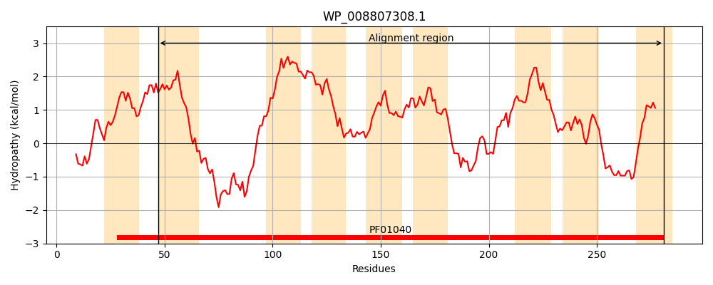
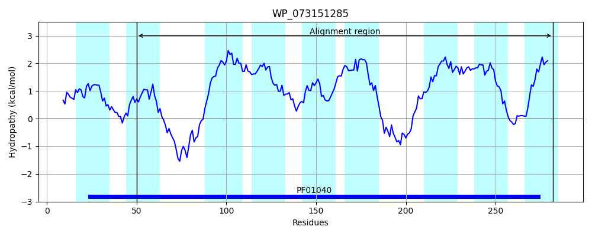
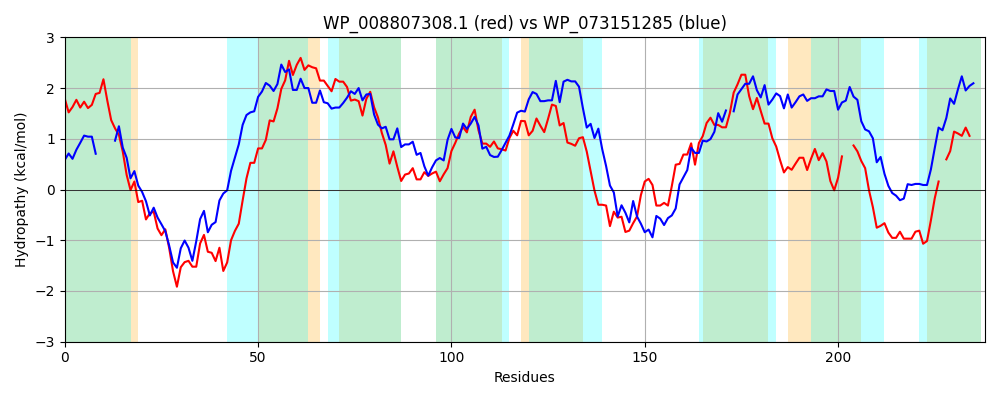

Hit Accession: WP_073151285
Hit TCID: 9.B.241.2.6
Hit Description: gnl|BL_ORD_ID|21404 gnl|TC-DB|WP_073151285.1|9.B.241.2.6 4-hydroxybenzoate octaprenyltransferase [Seinonella peptonophila]
Mach Len: 238
e:0.000000
Query TMS Count : 9
Hit TMS Count: 9
TMS-Overlap Score: 6.550000
Predicted Substrates:None
BLAST Alignment:
Score: 164 , Bit scores: 67 bits, E-value: 3.8e-13, Alignment length: 238, Percentage identity: 24
Query: 47 WILAVFVAGVWLMRAAGCVVNDYADRKFDGHVKRTARRPLPSGDVTEKEARTLFIVLVLLSFLLVLTLNTMTILLSVAALALAWVYPFMKRYTHLPQVVLGAAFGWSIPMAFSAVSESLPLSCWLMFLANILWAVAYDTQYAMVDRDDDVKIGIKSTAILFGENDRLIIGILQVAVLALMGAVGWLNGLGWEYYWSLFVAAG--LFGWQQKLIFNRERDNCFKAFMN-NNYVGLVLFL 281
WI V R+A +N DRK D RT+ R LP+G ++E ++ +L F L LN +T+ L A+ + Y + KR+T L VLG + + A++ + L+ ++F+ LW +D YA D D + + S FG L I L + ++ + G V L + ++ + +A + ++ ++ + AF N + +++FL
Sbjct: 50 WITLAMVGA----RSAAMALNRIIDRKIDAKNPRTSNRALPAGLLSETFVWGFVVLSFVLLFFAALQLNWLTVYLLPLAVFILVFYSYTKRFTWLCHFVLGISTAAGPLGGWIAITGRIDLTAIILFITVALWIGGFDVIYACQDVSFDRQERLHSIPARFGIRAALWISSL-MHLVTICGLVALLLMTELQLWFGIGIAIAFLILIYEHSIVSPNDLSRLNTAFFTMNGILSVIVFL 282 | Protein Hydropathy Plots: |
|---|
|  |  |
Pairwise Alignment-Hydropathy Plot:
|
|---|
|  |